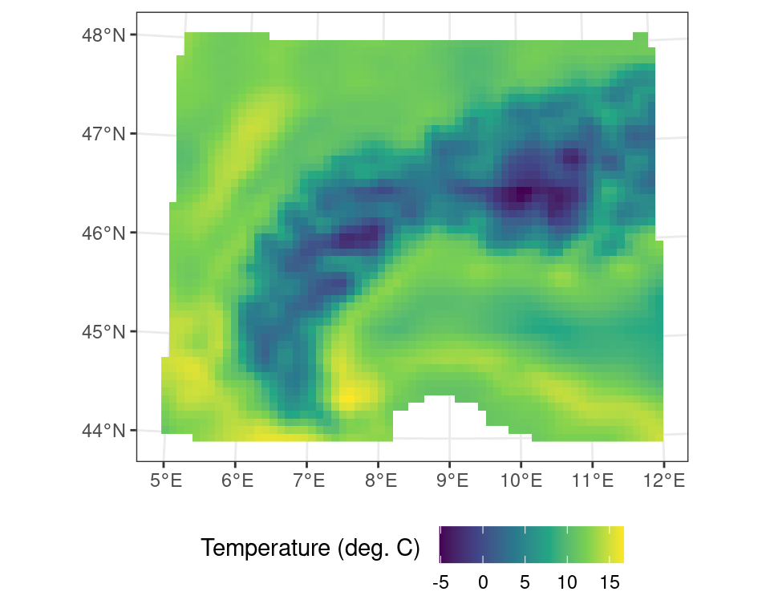
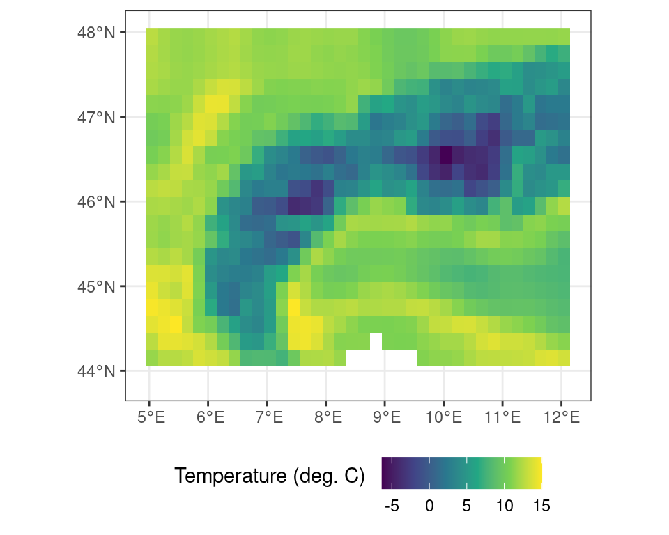
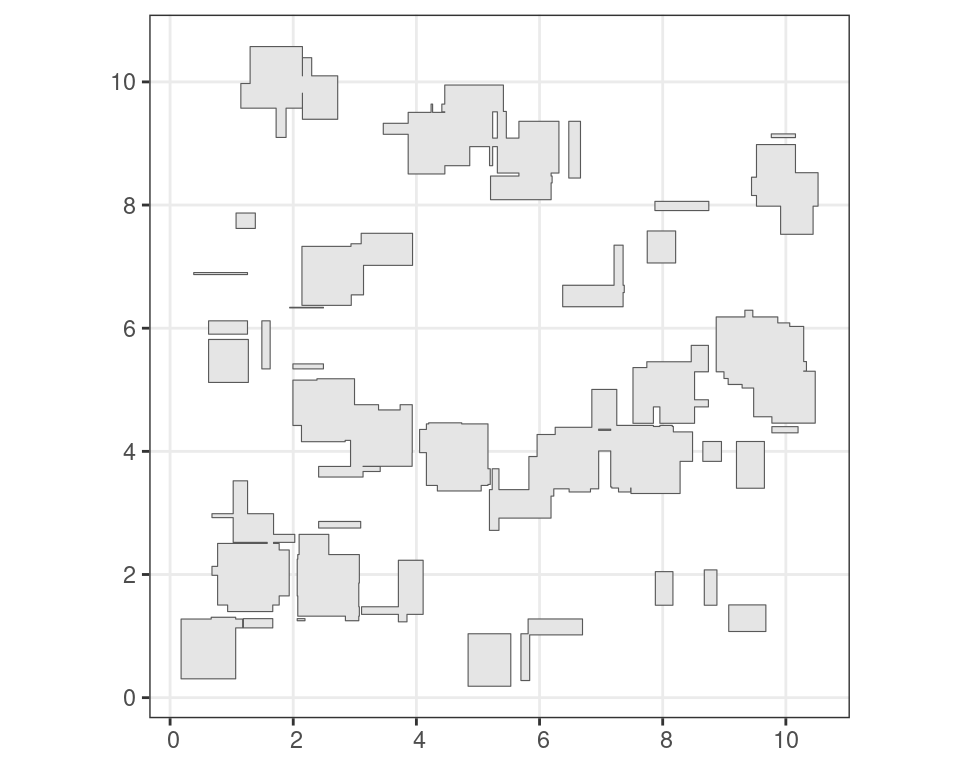

3 Geospatial data in R
Geospatial data procesing in R follows the standard raster vs. vector data model dichotomy as seen throughout most geographic information systems (GIS, Figure 3.1). Here, raster data represent data on a regular grid, while vector data describe geographic features using points, lines and polygons (shapes). The main difference between both types is their sensitivity to resolution, which is predetermined in the case of raster data, while undetermined using a vector topology.
This difference in data models used also determines the advantages and disadvantages of both models. Vector topology is resolution-independent and data efficient in storage. However, the handling of mathematical (topological) operations can be computationally expensive. In contrast, raster data has a fixed resolution and enables computationally efficient data transformations.
{kind=link}
Most geospatial data handling in R happens uses lower-level GDAL/OGR bindings. The GDAL/OGR library library is an open source framework for geospatial processing and is used across programming languages and geospatial frameworks or GIS systems (e.g. QGIS).
3.1 The R geospatial ecosystem
Spatio-temporal data often comes in the form of arrays, with space and time being array dimensions. Examples include socio-economic or demographic data, series of satellite images with multiple spectral bands, spatial simulations, and climate or weather model output.
A number of libraries (packages) make the use of this spatio-temporal data, and geo-computational work in R easy. However, the ecosystem has grown rapidly and is therefore continuously shifting. Unlike other processing environments, this makes it at times hard to keep track of what or when to use a particular package.
Here, a quick overview of the basic functionality and uses cases of different geospatial R packages is provided, and a brief overview of some basic geospatial operations using terra and sf libraries is given (see Section 3.1.1 and Section 3.1.2). For a more deeper dive into these packages, see Lovelace, Nowosad, and Muenchow (2019) .
3.1.1 The terra package
The terra package is the successor of the older raster package and provides a simpler interface. This package deals with both geographic raster and vector data, with the explicit requirement that raster data represent spatially continuous processes on a fixed (rectangular) grid.
Reading and inspecting data
# load the library
library(terra)
# read data from file
r <- terra::rast("demo_data.nc")
Note
The demo data can be downloaded from from this link!
We can inspect the meta data by calling the object:
print(r)class : SpatRaster
dimensions : 41, 71, 1 (nrow, ncol, nlyr)
resolution : 0.1, 0.1 (x, y)
extent : 4.95, 12.05, 43.95, 48.05 (xmin, xmax, ymin, ymax)
coord. ref. : lon/lat WGS 84
source : demo_data.nc
varname : t2m (2 metre temperature)
name : t2m
unit : K
time : 2022-01-01 12:00:00 UTC Or you can visualize the data by plotting the data (e.g., using plot()). Note that Figure 3.2 is generated using the ggplot2 library and is a bit more pleasing to the eye than the default plot() routine. You can also plot an interactive map using the terra function plet(), allowing you to scroll and zoom, while including various background tiles (such as satellite imagery, or topographic data).
Code
ggplot() +
tidyterra::geom_spatraster(data = r) +
scale_fill_viridis_c(
na.value = NA,
name = "2 m temp. (K) \n"
) +
theme_bw() +
theme(
legend.position = "bottom"
)Code
library(leaflet)
# set the colour scale manually
pal <- colorNumeric(
"magma",
values(r),
na.color = "transparent"
)
# build the leaflet map
# using ESRI tile servers
# and the loaded demo raster
leaflet() |>
addProviderTiles(providers$Esri.WorldImagery, group = "World Imagery") |>
addProviderTiles(providers$Esri.WorldTopoMap, group = "World Topo") |>
addRasterImage(
r,
colors = pal,
opacity = 0.8,
group = "raster"
) |>
addLayersControl(
baseGroups = c("World Imagery","World Topo"),
position = "topleft",
options = layersControlOptions(collapsed = FALSE),
overlayGroups = c("raster")
) |>
addLegend(
pal = pal,
values = values(r),
title = "2 m temp. (K)")
Note
Dynamic maps with the plet() function in terra leverages the leaflet library and Leafletjs javascript framework. To use dynamic maps straight from terra you require the latest leaflet package version. You can install this version by using remotes::install_github('rstudio/leaflet'). The above example shows a more advanced example, using two base maps and the demo raster data.
Dedicated functions exist to extract the layer names (names()) and the time stamps (time()) if there is a time component to the data. These functions allow you to extract these data and use them in analyses.
time(r)[1] "2022-01-01 12:00:00 UTC"names(r)[1] "t2m"Basic math
Basic math or logical operations can be performed on maps using standard R notations. As shown above the data contains temperature data in Kelvin. You can convert this data from Kelvin to Celsius by subtracting 273.15 from all values in the data set.
# conversion from Kelvin to C
r_c <- r - 273.15Code
ggplot() +
tidyterra::geom_spatraster(data = r_c) +
scale_fill_viridis_c(
na.value = NA,
name = "2 m temp. (deg. C) \n"
) +
theme_bw() +
theme(
legend.position = "bottom"
)Logical operations work in the same way. You can create a mask of temperatures above 5\(^\circ\)C using a simple logical operation.
# all locations above freezing
# as a binary mask
m <- r_c > 5Code
ggplot() +
tidyterra::geom_spatraster(data = m) +
scale_fill_viridis_d(
name = "Mask \n"
) +
theme_bw() +
theme(
legend.position = "bottom"
)You can exclude locations from calculations using masks. This is useful to restrict the region of interest of an analysis or limit edge cases of complex calculations beforehand. As an example you can mask out all values where the binary mask as generated above is FALSE (i.e. temperatures lower than 5\(^\circ\)C).
# all locations above freezing
# as a binary mask
r_m <- terra::mask(r_c, m, maskvalue = FALSE)Code
ggplot() +
tidyterra::geom_spatraster(data = r_m) +
scale_fill_viridis_c(
na.value = NA,
name = "Temperature (deg. C) \n"
) +
theme_bw() +
theme(
legend.position = "bottom"
)Band math (considering multiple layers)
Geospatial data often consists of multiple layers of information, either representing different properties (bands) or different times when data was acquired. The terra package allows you to manipulate data within and across bands.
# create a multi-layer object
# by combining objects
# here the correcte (t2m in C)
# and the masked values (>5 C)
# are combined
multi_layer <- c(r_c, r_m)
print(multi_layer)class : SpatRaster
dimensions : 41, 71, 2 (nrow, ncol, nlyr)
resolution : 0.1, 0.1 (x, y)
extent : 4.95, 12.05, 43.95, 48.05 (xmin, xmax, ymin, ymax)
coord. ref. : lon/lat WGS 84
source(s) : memory
names : t2m, t2m
min values : -6.326514, 5.003458
max values : 16.841455, 16.841455
time : 2022-01-01 12:00:00 UTC Operations on individual cells within terra within or across layers are governed by the *app() functions. Here, flavours such as app(), tapp(), and sapp(), are used to apply a function across all layers (to summarize data), to groups of layers (grouped summaries or complex band math), of manipulations of each individual layer with the same function (respectively).
For example, to calculate the mean between both layers in this multi-layer terra object one can use app() as such:
# apply the mean() function across
# all layers of the multi_layer object
multi_layer_mean <- terra::app(multi_layer, mean, na.rm = TRUE)Code
ggplot() +
tidyterra::geom_spatraster(data = multi_layer_mean) +
scale_fill_viridis_c(
na.value = NA,
name = "Temperature (deg. C) \n"
) +
theme_bw() +
theme(
legend.position = "bottom"
)In the above analysis the mean across all layers is calculated, while passing an additional argument to the mean() function (i.e. na.rm = TRUE), stating that NA values should be ignored. Doing so fills in the values masked out previously and yields the original r_c object (i.e. the temperature values in \(^\circ\)C).
Writing and exporting data
The terra library uses pointers when referencing to data (in memory). This means that you can not save the object itself to resume your work later on. Saving the above masked map r_m using saveRDS(r_m, "data.rds") will only save a pointer to a memory space which will not exist when opening a new session. This is in contrast to for example operations on tabulated data (e.g. JSON, CSV files). As such, you need to save the output of your analysis using a formal geospatial data format using writeRaster().
To save masked temperature data in Celsius you would use:
# save data to file
terra::writeRaster(r_m, "celsius_data_masked.tif")Alternatively, but for small datasets only, you could convert the geospatial data to a long oriented data frame and save the data using standard methods to save tabulated data. However, you might loose critical meta-data on geographic projections etc. Using this method to save your work is not recommended unless you keep track of all ancillary meta-data separately.
# convert geospatial data to a
# data frame notation, where the flag
# xy = TRUE denotes that pixel coordinate
# details should be exported as well
df <- as.data.frame(r, xy = TRUE)
head(df) x y t2m
1 5.0 48 286.4682
2 5.1 48 286.0754
3 5.2 48 285.6437
4 5.3 48 285.3351
5 5.4 48 285.0714
6 5.5 48 284.8469Extracting data
A common operation on geospatial data is the extraction of data for a given (point) location. This operation is as simple as providing a two column dataframe with longitude and latitude coordinates (or those matching the map projection). The data will be returned as an indexed dataframe. Alternatively you can also use an sf object with point, lines or polygons.
# set the longitude and latitude
# to extract
locations <- data.frame(
lon = c(8,8),
lat = c(46, 47)
)
# extract the values for a coordinate
# pair in the same projection as
# the map layout
values <- terra::extract(
r_c,
locations
)
print(values) ID t2m
1 1 0.519267
2 2 8.962656You can also return the cell number, or coordinates (xy) with this call.
# return the locations together with the
# extracted data
values <- terra::extract(
r_c,
locations,
xy = TRUE,
cell = TRUE
)
print(values) ID t2m cell x y
1 1 0.519267 1451 8 46
2 2 8.962656 741 8 47Transformations
All geospatial raster data is defined by a coordinate reference system and a resolution defining its grid. Both the spatial resolution and projection are not always constant between datasets. However, combining two datasets requires that they share a common grid (to execute band math or other operations). It is therefore often required to resample data to a different resolution and/or reproject the data if they do not share the same coordinate reference system.
It is common to find data which generated for a particular region to contain regional projections, rather than intuitive geographic (latitude / longitude) projection. To align these data with a dataset with geographic coordinates the data needs to be resampled and reprojected. For example, data with a European extent can use the Albers equal area projection for representing data truthfully area wise.
These map projections are often referred to by either their colloquial name, but most commonly in using their Coordinate Reference System (CRS) and EPSG code. You can search for projections on various websites, such as epsg.io, which list all the most common projections. For example, I can transform the temperature data into a projection which is conformal and maintains angles (i.e. shapes, but not distance and area) by using an UTM 32N projection or EPSG:23032. For an in depth discussion on reference systems I refer to specialized courses in Geographic Information Systems (GIS).
r_c_utm <- terra::project(r_c, crs("EPSG:23032"))Code
ggplot() +
tidyterra::geom_spatraster(data = r_c_utm) +
scale_fill_viridis_c(
na.value = NA,
name = "Temperature (deg. C) \n"
) +
theme_bw() +
theme(
legend.position = "bottom"
)
Resampling data always needs both a source and a target raster object (i.e. two SpatRaster maps). In this operation using the resample() function you will need to specify a method on how you will approach this resampling operation. Downsampling to a coarse resolution might need a bilinear interpolation for continuous variables. However, resampling land cover maps with discrete factors (classes) might need a nearest neighbour method.
In the small worked example below I will first aggregate the temperature data by a factor of two (2) using the aggregate() function. This new coarse resolution map wil then serve as a target for the resample routine.
# aggregate the original data by a factor of two (2)
# using default settings
r_c_2x <- terra::aggregate(r_c, fact = 2)
# resample the original data using the new aggregated grid size
# and the minimum value across the coarser grid size
r_resampled <- terra::resample(r_c, r_c_2x, method = "min")Code
ggplot() +
tidyterra::geom_spatraster(data = r_resampled) +
scale_fill_viridis_c(
na.value = NA,
name = "Temperature (deg. C) \n"
) +
theme_bw() +
theme(
legend.position = "bottom"
)
3.1.2 The sf package
Simple features are an open standard to store and access geographic data. The sf package provides a way to represent geospatial vector data as simple features in R. This results in nested data.frames or tibbles which adhere to the tidy data paradigm as previously described. They therefore are long oriented and support piped workflows on geometries. This standard reduces complexity and keeps geometry operations simple.
Reading and inspecting data
A lot of GIS vector data comes as shapefiles (.shp extention). An example shapefile is included in the sf package, and we can read it using:
# load library
library(sf)
# load included shapefile
nc <- sf::st_read(system.file("shape/nc.shp", package = "sf"))Reading layer `nc' from data source
`/home/runner/.cache/R/renv/cache/v5/R-4.3/x86_64-pc-linux-gnu/sf/1.0-12/5b41b4f0bd22b38661d82205a87deb4b/sf/shape/nc.shp'
using driver `ESRI Shapefile'
Simple feature collection with 100 features and 14 fields
Geometry type: MULTIPOLYGON
Dimension: XY
Bounding box: xmin: -84.32385 ymin: 33.88199 xmax: -75.45698 ymax: 36.58965
Geodetic CRS: NAD27When printing the object you will be provided with an overview, when plotting the spatial data (using plot()) will be visualized (similar to the raster data above).
print(nc)Simple feature collection with 100 features and 14 fields
Geometry type: MULTIPOLYGON
Dimension: XY
Bounding box: xmin: -84.32385 ymin: 33.88199 xmax: -75.45698 ymax: 36.58965
Geodetic CRS: NAD27
First 10 features:
AREA PERIMETER CNTY_ CNTY_ID NAME FIPS FIPSNO CRESS_ID BIR74 SID74
1 0.114 1.442 1825 1825 Ashe 37009 37009 5 1091 1
2 0.061 1.231 1827 1827 Alleghany 37005 37005 3 487 0
3 0.143 1.630 1828 1828 Surry 37171 37171 86 3188 5
4 0.070 2.968 1831 1831 Currituck 37053 37053 27 508 1
5 0.153 2.206 1832 1832 Northampton 37131 37131 66 1421 9
6 0.097 1.670 1833 1833 Hertford 37091 37091 46 1452 7
7 0.062 1.547 1834 1834 Camden 37029 37029 15 286 0
8 0.091 1.284 1835 1835 Gates 37073 37073 37 420 0
9 0.118 1.421 1836 1836 Warren 37185 37185 93 968 4
10 0.124 1.428 1837 1837 Stokes 37169 37169 85 1612 1
NWBIR74 BIR79 SID79 NWBIR79 geometry
1 10 1364 0 19 MULTIPOLYGON (((-81.47276 3...
2 10 542 3 12 MULTIPOLYGON (((-81.23989 3...
3 208 3616 6 260 MULTIPOLYGON (((-80.45634 3...
4 123 830 2 145 MULTIPOLYGON (((-76.00897 3...
5 1066 1606 3 1197 MULTIPOLYGON (((-77.21767 3...
6 954 1838 5 1237 MULTIPOLYGON (((-76.74506 3...
7 115 350 2 139 MULTIPOLYGON (((-76.00897 3...
8 254 594 2 371 MULTIPOLYGON (((-76.56251 3...
9 748 1190 2 844 MULTIPOLYGON (((-78.30876 3...
10 160 2038 5 176 MULTIPOLYGON (((-80.02567 3...
You can extract basic information such as the overall bounding box of the vector data using st_bbox().
st_bbox(nc) xmin ymin xmax ymax
-84.32385 33.88199 -75.45698 36.58965 The sf framework uses a tidy data approach. you can use operations on the list items stored within the larger data set by calculating the bounding box for each geometry.
nc |>
mutate(
bbox = purrr::map(geometry, sf::st_bbox)
)Simple feature collection with 100 features and 15 fields
Geometry type: MULTIPOLYGON
Dimension: XY
Bounding box: xmin: -84.32385 ymin: 33.88199 xmax: -75.45698 ymax: 36.58965
Geodetic CRS: NAD27
First 10 features:
AREA PERIMETER CNTY_ CNTY_ID NAME FIPS FIPSNO CRESS_ID BIR74 SID74
1 0.114 1.442 1825 1825 Ashe 37009 37009 5 1091 1
2 0.061 1.231 1827 1827 Alleghany 37005 37005 3 487 0
3 0.143 1.630 1828 1828 Surry 37171 37171 86 3188 5
4 0.070 2.968 1831 1831 Currituck 37053 37053 27 508 1
5 0.153 2.206 1832 1832 Northampton 37131 37131 66 1421 9
6 0.097 1.670 1833 1833 Hertford 37091 37091 46 1452 7
7 0.062 1.547 1834 1834 Camden 37029 37029 15 286 0
8 0.091 1.284 1835 1835 Gates 37073 37073 37 420 0
9 0.118 1.421 1836 1836 Warren 37185 37185 93 968 4
10 0.124 1.428 1837 1837 Stokes 37169 37169 85 1612 1
NWBIR74 BIR79 SID79 NWBIR79 geometry
1 10 1364 0 19 MULTIPOLYGON (((-81.47276 3...
2 10 542 3 12 MULTIPOLYGON (((-81.23989 3...
3 208 3616 6 260 MULTIPOLYGON (((-80.45634 3...
4 123 830 2 145 MULTIPOLYGON (((-76.00897 3...
5 1066 1606 3 1197 MULTIPOLYGON (((-77.21767 3...
6 954 1838 5 1237 MULTIPOLYGON (((-76.74506 3...
7 115 350 2 139 MULTIPOLYGON (((-76.00897 3...
8 254 594 2 371 MULTIPOLYGON (((-76.56251 3...
9 748 1190 2 844 MULTIPOLYGON (((-78.30876 3...
10 160 2038 5 176 MULTIPOLYGON (((-80.02567 3...
bbox
1 -81.74107, 36.23436, -81.23989, 36.58965
2 -81.34754, 36.36536, -80.90344, 36.57286
3 -80.96577, 36.23388, -80.43531, 36.56521
4 -76.33025, 36.07282, -75.77316, 36.55716
5 -77.90121, 36.16277, -77.07531, 36.55629
6 -77.21767, 36.23024, -76.70750, 36.55629
7 -76.56358, 36.16973, -75.95718, 36.55606
8 -76.95367, 36.29452, -76.46035, 36.55525
9 -78.32125, 36.19595, -77.89886, 36.55294
10 -80.45301, 36.25023, -80.02406, 36.551043.1.2.1 Convert coordinates
You can easily convert a list of coordinates to an {sf} object using st_as_sf(), while specifying the columns containing the coordinates and a particular coordinate reference system.
# demo data frame
df <- data.frame(
lat = c(40, 41),
lon = c(20, 10),
value = c(3, 5)
)
# sf transformation of df
# sets coordinate columns
# and projection epsg
df_sf <- sf::st_as_sf(
df,
coords = c("lon", "lat"),
crs = "epsg:4326"
)
# print the summary of
# the sf object
print(df_sf)Simple feature collection with 2 features and 1 field
Geometry type: POINT
Dimension: XY
Bounding box: xmin: 10 ymin: 40 xmax: 20 ymax: 41
Geodetic CRS: WGS 84
value geometry
1 3 POINT (20 40)
2 5 POINT (10 41)Reprojecting data
You can reproject our point data to a different coordinate system using the st_transform() function. This function requires a destination CRS. I will transform our data from EPSG 4326 to a Swiss coordinate system (EPSG ), and convert the {sf} object back to an ordinary tibble (including the transformed coordinates).
# transformation to
# swiss coordinate system
df_sf_swiss <- df_sf |>
st_transform(crs = "epsg:2056")
# print the reprojected data (as sf)
print(df_sf_swiss)Simple feature collection with 2 features and 1 field
Geometry type: POINT
Dimension: XY
Bounding box: xmin: 2816616 ymin: 512523.9 xmax: 3675355 ymax: 541125.9
Projected CRS: CH1903+ / LV95
value geometry
1 3 POINT (3675355 512523.9)
2 5 POINT (2816616 541125.9)Note that the conversion back to a dataframe requires you the explicitly put the point coordinates into new columns using a mutate() call.
# return to simple data frame
df_swiss <- df_sf_swiss |>
dplyr::as_tibble() |>
dplyr::mutate(
swis_x = st_coordinates(geometry)[, "X"],
swiss_y = st_coordinates(geometry)[, "Y"]
) |>
dplyr::select(
-geometry
)
# print coverted (dataframe) data
print(df_swiss)# A tibble: 2 3
value swis_x swiss_y
<dbl> <dbl> <dbl>
1 3 3675355. 512524.
2 5 2816616. 541126.Basic vector operations
Given the tidy data approach of sf data we can use the same logic to filter data. For example, if we only want to retain Camden county from the data set we can use the filter() function as shown in Section 1.4.
# subset data using the
# tidy filter approach
camden <- nc |>
filter(
NAME == "Camden"
)Most common operations on vector data are area-based logical operations. Examples include taking the intersection or union of features, which only retains the outline of a polygon. These operations can be executed on features themselves or should be mediated by geometric binary operations which can be used for filtering the original data.
For example the st_intersection() function calculates where and how frequent simple features overlap (interesect) with each other. The results are again a tidy simple feature which can be sorted or filtered using the standard filter() function.
# generate random boxes
m <- rbind(c(0,0), c(1,0), c(1,1), c(0,1), c(0,0))
p <- st_polygon(list(m))
n <- 100
l <- vector("list", n)
for (i in 1:n)
l[[i]] = p + 10 * runif(2)
s <- st_sfc(l)
sf <- st_sf(s)
# calculate the intersection of all simple features
i <- sf::st_intersection(sf)
# filter out polygons with more than 1 overlap
# with 1 being a self overlap
i <- i |>
filter(
n.overlaps > 1
)Code
ggplot() +
geom_sf(
data = i["n.overlaps"],
aes(
fill = n.overlaps
)
) +
scale_fill_viridis_c(
name = "overlaps"
) +
theme_bw()Other functions allow you to group overlapping features. For example, grouping of intersecting features can be done using st_union(), which only returns the outermost boundary of a feature.
u <- st_union(i)Code
ggplot() +
geom_sf(
data = u
) +
theme_bw()
The sf package is relatively complex and for a full understanding of its components I refer to the package documentation and the book by Lovelace, Nowosad, and Muenchow (2019).
Writing and exporting data
Although read in sf objects can be saved as internal R formats such as rds files using saveRDS(), for portability between various GIS software packages sf can write out a new shapefile using st_write().
# write the north carolina data
# to shapefile in the tempdir()
sf::st_write(nc, file.path(tempdir(), "nc.shp"))3.1.3 The stars package
The stars package is another geospatial R package you should take note of. In contrast to terra, it is specifically tailored to dealing with data cubes. These are arrays of data on which one axis is time.

Unlike for the terra package, grids in the stars package dont have to be regular and rectangular, but can be of a different sort, such as curvi-linear data (Figure 3.15).

Some other distinctions should be made, such as the fast summarizing of raster data to vector features. However, in most cases, it is best to explore functions within the terra package first before considering stars.
3.1.4 Other noteworthy packages
Other critical packages are ncdf4 which will be installed by default, but the included functions allow for the manipulation (reading and writing) of the common netCDF format. The rstac package which provides a convenient way to browse Spatio-Temporal Asset Catalogues (STAC), a format commonly used to organize remote sensing images online. The sits package was created by the Brazilian National Institute for Space Research (INPE) and provides tools for machine learning on data cubes.
Note that R (or Python) is infinitely flexible, and many packages exist to address niche problems within the context of geospatial data manipulation. While they most often tap into the the GDAL framework, these packages can be very powerful for certain applications which are outside the scope of this basic introduction. For more in-depth discussion, the reader is referred to the list of resources in the references at the end of this book.